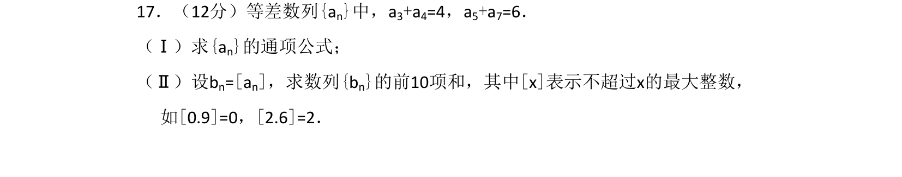
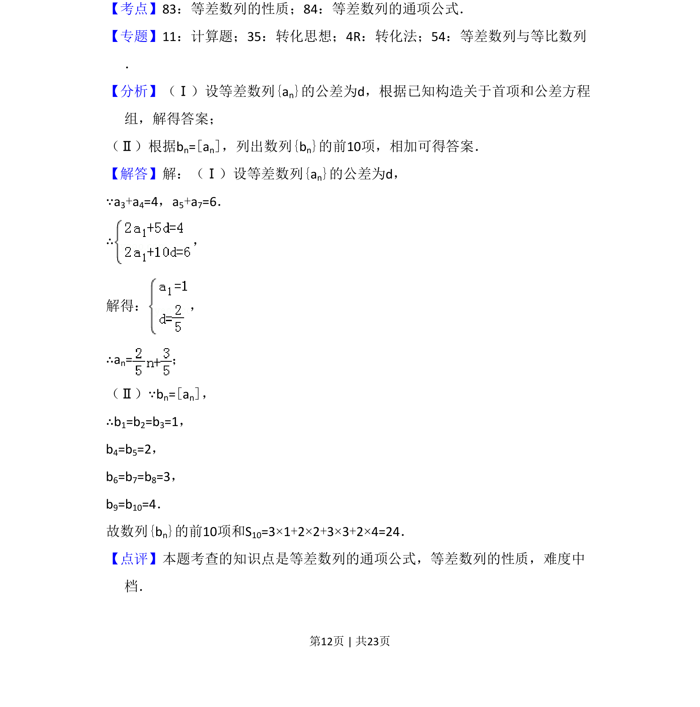

2016-文-17
考点：等差数列性质 等差数列通项公式 取整函数
题面

摘要
等差数列通项公式与性质，结合取整函数求数列前10项和
关联考点
答案与解析


📄 原 PDF 第 12 页：
素材/真题/吉林/2008-2024·（吉林）数学高考真题/2016年高考数学试卷（文）（新课标Ⅱ）（解析卷）.pdf
题干文本
17．（12分）等差数列{an}中，a3+a4=4，a5+a7=6． （Ⅰ）求{an}的通项公式； （Ⅱ）设bn=[an]，求数列{bn}的前10项和，其中[x]表示不超过x的最大整数， 如[0.9]=0，[2.6]=2．
解析文本
【考点】83：等差数列的性质；84：等差数列的通项公式．菁优网版权所有 【专题】11：计算题；35：转化思想；4R：转化法；54：等差数列与等比数列 ． 【分析】（Ⅰ）设等差数列{an}的公差为d，根据已知构造关于首项和公差方程 组，解得答案； （Ⅱ）根据bn=[an]，列出数列{bn}的前10项，相加可得答案． 【解答】解：（Ⅰ）设等差数列{an}的公差为d， ∵a3+a4=4，a5+a7=6． ∴， 解得： ， ∴an=； （Ⅱ）∵bn=[an]， ∴b1=b2=b3=1， b4=b5=2， b6=b7=b8=3， b9=b10=4． 故数列{bn}的前10项和S10=3×1+2×2+3×3+2×4=24． 【点评】本题考查的知识点是等差数列的通项公式，等差数列的性质，难度中 档．